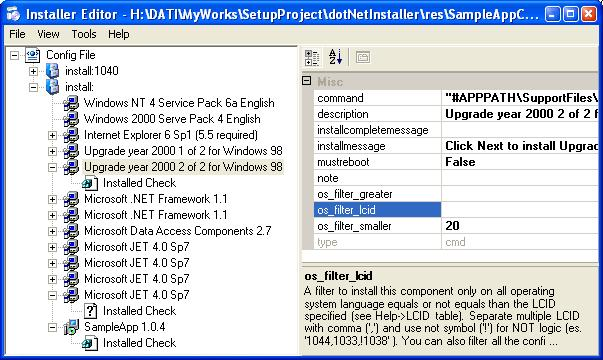

dotNetInstaller - Setup Bootstrapper for .NET Application
Lib Version: 1.3.2.0
Doc Version: 1.6 DRAFT

Introduction
This application doesn't replace tool like InstallShield, Wise or Visual Studio Setup and Deployment Project; my goal is to create an application to help the users to installing the correct prerequisites components.
Today applications often need to install several components to work properly: Windows Service Pack, Internet Explorer, MDAC, .NET Framework, ...
With this tool the developer can define the application prerequisites and install the correct version of these components in the correct order based on the user operating system type and language, allow the user to download these components from the web or install these components directly from his media (usually a CDROM).
This project is composed with these components:
- dotNetInstaller.exe + Source Code: Main bootstrapper application, written with Visual Studio 2005 C++ and MFC.
- InstallerEditor.exe + Source Code: Application for editing configurations files and edit dotNetInstaller.exe resources, written with Visual Studio 2005 C# for .NET Framework 2.0.
- Configuration samples and SupportFiles template.
This project is based on
Microsoft bootstrapper and Kevin Moore bootstrapper 'Enhanced .NET Bootstrap
Setup' (http://www.codeproject.com/managedcpp/dotnetsetup.asp).
All the settings are stored in a XML file parsed with TinyXml, a little but very good XML parser. You can find it at http://sourceforge.net/projects/tinyxml.
In the previous version I have used a good parser by Cho, Kyung-min, XMLite: simple xml parser.
http://www.codeproject.com/useritems/xmlite.asp but unfortunately can't support very well UTF-8 so now I use TinyXml.
A special thanks to Kevin Moore, Cho, Kyung-min, TinyXML project, Peter Mares, Bilou Gateux ( for helping me with the french translation), Wolfgang, Franz Wong, sambourton and a lot of other people who helped me with code, bugs report, new ideas and suggestions.
I build this project with Windows XP, Visual Studio 2005 (C++ and C#) and Microsoft .NET Framework 2.0. Check
for the latest version at: http://www.devage.com/.
If you have any ideas or questions contact me at: webmaster@devage.com.
The installer, the editor and the configuration files are all UTF-8 compatible, the installer is compiled with UNICODE but you can use the Microsoft Layer for Unicode for using the installer with Win9x and ME operating system.
For more informations, a discussion forums, bug tracker system or to download the latest release go to the SourceForge page:
http://sourceforge.net/projects/dotnetinstaller or to my home page
http://www.devage.com/
Authors
This application is maintained by
Samples
In the attached zip file you can find 2 samples: a standalone setup and a web setup. Both setups are configured to correctly install these components:
- NT4 Sp6
- Windows 2000 Sp4
- MDAC 2.8
- Jet 4.0 Sp8
- .NET Framework 1.1
- Your custom setup or windows installer package
on these operating system:
- Windows 98
- Windows 98se
- Windows ME
- Windows NT4
- Windows 2000
- Windows XP
- Windows Server 2003
The configuration files also check and install all the requirements software. For more informations on software requirements look at the Software Requirements section.
I have created the configuration files for English and Italian operating system, but you can include your custom language easily.
For other samples or informations look at the attached zip file.
The editor: InstallerEditor.exe

You can create two types of configuration files with the editor:
- Standalone Configuration: A configuration that runs the components setups from a specified path, usually a relative path of the dotNetInstaller.exe file. Select this configuration if you want to distribute your application with a CDROM.
- Web Configuration: A configuration that download and execute the required components from a specified web site. Select this configuration if you want to distribute the configuration over the web.
With the editor you can create these configurations files and then include these files in the dotNetInstaller resources. With this solution you can only distribute one exe file.
Another solution is to distribute in the same path of the dotNetInstaller.exe the configuration file using the name 'configuration.xml' and if you want you can also distribute a bitmap with the name 'banner.bmp'. dotNetInstaller first checks for this configuration file, if the file doesn't exist the application use the configuration embedded into the exe.
In the XML configuration file you can use some path variables in all
command or path settings. Is recommended to use " symbol in all the command attributes that contains one or more space, in msi
component the " symbol is not supported and if needed the application
add this symbol automatically. Is recommended to use #APPPATH variable in all
the attributes with path value (like command, dialog_bitmap,
package), this constant allows to write relative path string from
the dotNetInstaller.exe folder otherwise all the path are relative to the
system current directory.
If you configure the application to download the components, I recommend to use the #TEMPPATH variable as destination directory and then run the components from the same path.
For example if you want to launch a file ('My App.exe') in the same folder of
dotNetInstaller.exe you can write in the command string: "#APPPATH\My App.exe"
Remember that the order of the components that you see in the editor is the same order that the setup use to install the same components, so be carefull to insert the components in the correct order. In this release you cannot change the order of the components from the editor, if you need this feature you must change the XML manually.
You can use the "Add ->Component Wizard ..." menu when adding new components to automatically add the most important components like: Service Pack 6a for NT4, Internet Explorer 6, .NET 1.1, MDAC 2.8, ...
Tutorials
How to create a Standalone Setup to install .NET Framework and your msi setup
We create a CDROM with your MSI package, SupportFiles (like .NET Framework), configuration file configuration.xml) and a bitmap (banner.bmp). All these components are installed directly from the CDROM.
- Create a folder that represents your final distribution CDROM, for example 'c:\MyRelease\' .
- Copy under 'c:\MyRelease\' the directory 'SupportFiles' that you can find in the project .zip .
- In the SupportFiles replace all the readme.txt files with the real components files that your installation need; for example replace the 'SupportFiles\dotNet\v1.1\English\dotnetfx.exe.readme.txt' with the real dotnetfx.exe file that you can download from microsoft web site.
- Copy your msi package (that you can create with Visual Studio .NET, InstallShield or others installation tool) under the 'c:\MyRelease\'.
- Copy dotNetInstaller.exe under 'c:\MyRelease\'.
- Copy unicows.dll under 'c:\MyRelease\'.
- Create a bitmap (banner.bmp 110x208 pixels) with the name 'c:\MyRelease\banner.bmp' with the logo of your application.
- Execute the InstallerEditor.exe file.
- Select the menu 'File'->'New...' and create a new file with the name 'c:\MyRelease\configuration.xml' .
- Select from the menu 'Tools'->'Template for New Item' the user interface language that you want. (the default language is English, but you can create you custom template and use it with "Tools->Customize Template" command. The templates are xml files that you can easily customize and update with your custom language or captions.)
- Right click on the 'Config File' node and select 'Add'->'Setup Configuration'
- Select the just created 'install:' node and customize the properties 'dialog_caption', 'dialog_message' and 'installation_completed' with the name of your application.
- Right click on the 'install:' node and select 'Add'->'Component Wizard...'
- Select 'Microsoft .NET Framework 1.1', 'Distributed with dotNetInstaller' and click the OK button.
- Right click on the 'install:' node and select 'Add'->'Msi Component'
- Select the just created node and customize the properties 'description' and 'package' with the name of your setup and msi package name. In the package path I use #APPPATH variable that represents the dotNetInstaller.exe path.
- Select the menu 'File'->'Save'.
- Write all the contents of the 'c:\MyRelease\' directory on your CDROM. If you want you can also create a 'autorun.inf' file that execute dotNetInstaller.exe.
For others informations in the .zip you can find an example of a configuration.xml file configured to install these components for Windows 98, 98 SE, Millennium, NT4, 2000, XP, 2003:
- Service Pack 6a for Windows NT 4
- Internet Explorer 6 Sp1
- .NET Framework 1.1
- Microsoft Data Access Component 2.7 (MDAC 2.7)
- Microsoft JET 4.0 Service Pack 6
- Sample application
I included a SupportFiles directory with the required structure and some
readme.txt files where you can find a link to download the required components
(usually from microsoft web site).
Consider also that these components are present as wizard in the InstallerEditor, so you can easily use these components in your setup.
This is the diagram of a standalone setup project:

How to create a Web Setup to install .NET Framework and your msi setup
Create the support files directory
We create a web site with your MSI package and all the support files (like .NET Framework).
- Create a folder that represents your final distribution web site, for example 'http://www.mysite.com/MyRelease/' .
- Copy under 'http://www.mysite.com/MyRelease/' the directory 'SupportFiles' that you can find in the project .zip .
- In the SupportFiles replace all the readme.txt files with the real components files that your installation need; for example replace the 'SupportFiles\dotNet\v1.1\English\dotnetfx.exe.readme.txt' with the real dotnetfx.exe file that you can download from microsoft web site.
- Copy your msi package (that you can create with Visual Studio .NET, InstallShield or others installation tool) under the 'http://www.mysite.com/MyRelease/'.
Create the main configuration file
We create a configuration file that download and install the components from a web site (for .NET Framework and one MSI package).
- Execute the InstallerEditor.exe file.
- Select the menu 'File'->'New...' and create a new file with the name 'configuration.xml' and save it in 'http://www.mysite.com/MyRelease/' .
- Select from the menu 'Tools'->'Template for New Item' the user interface language that you want. (the default language is English, but you can create you custom template and use it with "Tools->Customize Template" command. The templates are xml files that you can easily customize and update with your custom language or captions.)
- Right click on the 'Config File' node and select 'Add'->'Setup Configuration'
- Select the just created 'install:' node and customize the properties 'dialog_caption', 'dialog_message' and 'installation_completed' with the name of your application.
- Right click on the 'install:' node and select 'Add'->'Component Wizard...'
- Select 'Microsoft .NET Framework 1.1', 'Downloaded from Internet', and replace 'http://www.myWebSite.com/MyApp/SupportFiles' with your web site for example 'http://www.mysite.com/MyRelease/SupportFiles' and click the OK button.
- Right click on the 'install:' node and select 'Add'->'Msi Component'
- Select the just created node and customize the properties 'description' and 'package' with the name of your setup and msi package name. Replace the #APPPATH\mysetup.msi with #TEMPPATH\MyApplicationName\mysetup.msi, this is download destination of the package.
- Right click on the msi component and select 'Add'->'Download Dialog'
- Select the just created node 'Download Dialog' and customize the properties 'dialog_caption' and 'dialog_message' with the name of your application.
- Right click on the 'Download Dialog' node and select 'Add'->'Download File'
- Select the just created node under 'Download Dialog' and customize the properties 'componentname', 'destinationpath' (write for example '#TEMPPATH\MyApplicationName\', must be the same path of the 'package' property) and 'sourceurl' (write 'http://www.mysite.com/MyRelease/mysetup.msi') .
- Select the menu 'File'->'Save', and copy this configuration.xml file under 'http://www.mysite.com/MyRelease/'.
Create the bootstrapper
We create an executable that download and execute the main configuration file from a web site, changing the dotNetInstaller resources with our custom xml and bitmap.
- Create a bitmap (banner.bmp 110x208 pixels) with the logo of your application in a folder called 'MyWebSetup'.
- Execute the InstallerEditor.exe file.
- Select the menu 'File'->'New...' and create a new file with the name 'configuration.xml' in the folder 'MyWebSetup'.
- Select from the menu 'Tools'->'Template for New Item' the user interface language that you want. (the default language is English, but you can create you custom template and use it with "Tools->Customize Template" command. The templates are xml files that you can easily customize and update with your custom language or captions.)
- Right click on the 'Config File' node and select 'Add'->'Web Configuration'
- Select the just created node 'reference:' and customize the properties 'referencefile' for example write '#TEMPPATH\MyApplicationName\configuration.xml'.
- Select the node 'Download Dialog' under 'reference:' and customize the properties 'dialog_caption' and 'dialog_message'.
- Right click on the 'Download Dialog' node and select 'Add'->'Download File'
- Select the just created node under 'Download Dialog' and customize the properties 'componentname', 'destinationpath' (write for example '#TEMPPATH\MyApplicationName\', must be the same path of the 'referencefile' property) and 'sourceurl' (write 'http://www.mysite.com/MyRelease/configuration.xml', must be the URL where you can download the previously created configuration file) .
- Select the menu 'File'->'Save' and copy this configuration.xml file under 'MyWebSetup'.
- Copy in the directory 'MyWebSetup' 'unicows.dll' and 'dotNetInstaller.exe'.
- Create a zip file 'MyWebSetup.zip' (or a Self Extracting File) with the name 'MyWebSetup.zip' or '.exe' with the contents of the directory 'MyWebSetup' (contents:'unicows.dll', 'dotnetInstaller.exe', 'banner.bml' and 'configuration.xml').
- Copy 'MyWebSetup.zip' under your 'http://www.mysite.com/MyRelease/'.
Now the user must only download the 'MyWebSetup.zip' (< 400 Kb) and execute dotNetInstaller (or using a Self Extractor file you can automatically run it), this application automatically download and install the required components, in this example .NET Framework and one MSI package.
This is the diagram of a web setup project:

Path variables
These are the variables that can be used in the configuration file in all the attribute that contains a path (dialog_bitmap,command, ...):
#APPPATH - This string is replaced with the directory of dotNetInstaller.exe program.#SYSTEMPATH - This string is replaced with the windows system directory (using GetSystemDirectory() API, usually c:\WINNT\System32 ).#WINDOWSPATH - This string is replaced with the windows directory (using GetWindowsDirectory() API, usually c:\WINNT ).#TEMPPATH - This string is replaced with the temp directory (using GetTempPath() API, usually C:\Documents and Settings\[User]\Local Settings\Temp ).
Check if the component is already installed
You can use the installedcheck element to check if a
component is already installed, for example you can check if the .NET Framework
1.1 is installed by reading this registry key SOFTWARE\Microsoft\NET Framework
Setup\NDP\v1.1.4322\Install = 1.
For now there are two type of install check:
- 'check_registry_value' - Check for a specific registry value.
- 'check_file' - Check for a specific file with a specific version.
There are two type of comparison when check for a registry value or file version: 'match'
(check if the exact value is present) or 'version' (check if the version is greater or equal).
You can look at the example to see the check used with the most common components: .NET Framework, Internet Explorer, MDAC, JET and more.
Check the operating system version
This is the operating system table used to install a component only in a
specific operating system version.
|
Operating System Name |
Enum |
Numeric Identifier |
| Not Valid |
winNotValid |
0 |
| Windows 95 |
win95 |
5 |
| Windows 95 OSR2 |
win95osr2 |
10 |
| Windows 98 |
win98 |
15 |
| Windows 98 Second Edition |
win98se |
20 |
| Windows Millennium |
winME |
25 |
| Windows NT4 |
winNT4 |
30 |
| Windows NT4 Service Pack 6 |
winNT4sp6 |
35 |
| Windows NT4 Service Pack 6a |
winNT4sp6a |
40 |
| Windows 2000 |
win2000 |
45 |
| Windows 2000 Service Pack 1 |
win2000sp1 |
50 |
| Windows 2000 Service Pack 2 |
win2000sp2 |
55 |
| Windows 2000 Service Pack 3 |
win2000sp3 |
60 |
| Windows 2000 Service Pack 4 |
win2000sp4 |
65 |
| Windows XP |
winXP |
75 |
| Windows XP Service Pack 1 |
winXPsp1 |
80 |
| Windows XP Service Pack 2 |
winXPsp2 |
82 |
| Windows Server 2003 |
winServer2003 |
90 |
| Next .... |
winLater |
100 |
Same examples:
-
Install a component only in Windows XP (with no service pack check) :
os_filter_greater='74', os_filter_smaller='90'.
-
Install a component only in Windows 2000 or later :
os_filter_greater='44',
os_filter_smaller='' .
-
Install a component only in Windows 98 (not in Windows 98 SE):
os_filter_greater='14',
os_filter_smaller='16' .
-
Install a component always:
os_filter_greater='',
os_filter_smaller='' .
Usually is best to use an install check to see if the component is already
installed, but for some components is necessary to check the operating system
version (especially for service pack or windows update).
Multilanguage features
dotNetInstaller reads all the captions and messages from the configuration file; so to create your custom language you can easily edit the configuration file using your language.
With InstallerEditor you can easily create custom languages using template files. For now there are 3 default files: english_template.xml, french_template.xml and italian_template.xml. The editor can be configured to use one of these files so, when you create new items in the editor, default values are readed from the template selected.
To configure the list of templates available you can use the "Tools->Customize Templates" menu. To select a template you can use the "Tools->Template for new Item" menu.
Of course you can create your custom template files following the xml structure of one of the existing files.
UTF-8 and Unicode
To full support non english language the configuration file uses UTF-8 encoding.
To read and use correclty this encoding I have compiled dotNetInstaller with UNICODE. The editor is already full compatible with unicode thanks to .NET that use always unicode strings. Remember that unicode is not supported on Windows 95, 98 and ME; so if you use one of these operating system you must copy Microsoft Layer for Unicode (unicows.dll) in the same path of dotNetInstaller.exe (see also Deploy dotNetInstaller section).
Microsoft Link: Microsoft Layer for Unicode on Windows 95/98/Me Systems
Deploy dotNetInstaller
You can deploy dotNetInstaller in 2 ways, these are the files that you must inlcude:
- Using directly dotNetInstaller.exe:
- dotNetInstaller.exe - Main bootstrapper executable
- configuration.xml - Configuration file
- unicows.dll - Microsoft Layer for Unicode (this file is required only on Windows 95, 98 and ME).
- Create a custom executable using InstallerEditor (with the "File->Create Exe" method):
- dotNetInstaller.exe - Main bootstrapper executable edited with InstallerEditor.
- unicows.dll - Microsoft Layer for Unicode (this file is required only on Windows 95, 98 and ME).
IMPORTANT NOTE: On Windows 95, 98 and ME operating system you must deploy unicows.dll in the same path of dotNetInstaller.exe (or of the executable generated by the editor).
XML configuration file
Is recommended to use the editor InstallerEditor to create or modify your configuration files or I suggest to use a normal text editor or xml editor compatible with UTF-8. The configuration file must be written using UTF-8 encoding.
NOTE:If you want to insert the " char in the XML manually you must write " .
| configurations |
| Root element |
| ATTRIBUTES: |
|
| CHILDREN: |
|
| configuration (type='install') |
| A configuration used to install a collection of components. |
| ATTRIBUTES: |
| type |
'install' - Type of the configuration. Can be 'install' or 'reference'. |
| lcid |
A filter to install this configuration only on all operating system language equals or not equals than the LCID specified
(see Help->LCID Table). Separate multiple LCID with comma (',') and use not symbol ('!') for NOT logic (es. '1044,1033,!1038'
). You can also filter a specified component.
|
| dialog_caption |
Main dialog title. |
| dialog_message |
Main message of the main dialog. |
| dialog_bitmap |
Bitmap file used in the left panel of the main dialog. If this file doesn't exist or this attribute is empty the application
load the bitmap from the .exe resource. Can contains path constant (see Help->Path Constant).
|
| install_caption |
Caption of the Install button. |
| cancel_caption |
Caption of the Cancel button. |
| reinstallflag_caption |
Caption for the 'Reinstall all check box'. |
| status_installed |
The string used for indicating an installed component. |
| status_notinstalled |
The string used for indicating a not installed component. |
| failed_exec_command_continue |
The message used when a component cannot be installed and ask if the application can continue with others components (Yes/No
message). Must contain one '%s' string where the application put the description of the component.
|
| installation_completed |
Installation completed message. |
| installing_component_wait |
The message used when installing a component. Must contain one '%s' string where the application put the description of the
component.
|
| reboot_required |
The message used when the application need to restart and ask if restart now (with a Yes/No message). |
| advanced_caption |
Caption of the Advanced button. Used to show the 'Component Selector' dialog with the complete list of components available
to install. If empty the button Advanced is not available.
|
| dialog_selector_caption |
Component Selector dialog title, this dialog shows the complete list of components available to install. |
| dialog_selector_message |
Component Selector dialog description, this dialog shows the complete list of components available to install. |
| dialog_selector_cancel |
Component Selector dialog Cancel caption button. |
| dialog_otherinfo_caption |
Caption of the link at the bottom of the main dialog that open the link specified in the dialog_otherinfo_link attribute.
If empty the link is hidden. Usually used for help, readme or internet link. See also dialog_otherinfo_link attribute.
|
| dialog_otherinfo_link |
Command to execute when the user click on the link at the bottom of the main installation dialog. Can be any valid command
(executable, document, web page, ...) valid for the ShellExecute API. Must be defined the dialog_otherinfo_caption attribute.
Can contains path constant (see Help->Path Constant).
|
| complete_command |
Command executed when all components are installed correctly; can be any executable, document or web page valid for ShellExecute
API. Usually is a readme file, a web page or a startup file. If empty no command is executed.
|
| auto_close_if_installed |
If true auto close the dialog if all the components are already installed (before closing dotNetInstaller always execute the
complete message box and execute the complete command).
|
| os_filter_greater |
Filter for minimum operating system version |
| os_filter_smaller |
Filter for maximum operating system version |
| os_filter_not_match_message |
Message if the current operating system does not match the operating system filter |
|
| CHILDREN: |
|
| configuration (type='reference') |
| A configuration used to download a configuration file from a specific URL. |
| ATTRIBUTES: |
| type |
'reference' - Type of the configuration. Can be 'install' or 'reference'. |
| lcid |
A filter to install this configuration only on all operating system language equals or not equals than the LCID specified
(see Help->LCID Table). Separate multiple LCID with comma (',') and use not symbol ('!') for NOT logic (es. '1044,1033,!1038'
). You can also filter a specified component. If empty no filter is applied.
|
|
| CHILDREN: |
| downloaddialog |
| configfile |
|
| configfile |
| The path to the configuration file downloaded. |
| ATTRIBUTES: |
| filename |
The configuration file where the application can find the configuration. Usually this is the destination directory of the
downloaded component. Can contains path constant (see Help->Path Constant).
|
|
| CHILDREN: |
|
| components |
| A collection of elements of type 'component'. |
| ATTRIBUTES: |
|
| CHILDREN: |
|
| component (see also specific help based on the 'type' attribute) |
| A component to be installed. |
| ATTRIBUTES: |
| type |
The type of the component; can be 'cmd' for executing generic command line installation or 'msi' for installing Windows Installer
MSI package or 'openfile' to open a file. Each type has his own attributes.
|
| os_filter_greater |
A filter to install this component only on all operating system id greater than the id specified (see Help->Operating System
Table). For example to install a component only in Windows 2000 or later write '44'.
|
| os_filter_smaller |
A filter to install this component only on all operating system id smaller than the id specified (see operating system table).
For example to install a component preceding Windows 2000 write '45'.
|
| os_filter_lcid |
A filter to install this component only on all operating system language equals or not equals than the LCID specified (see
Help->LCID table). Separate multiple LCID with comma (',') and use not symbol ('!') for NOT logic (es. '1044,1033,!1038' ).
You can also filter all the configuration element.
|
| installcompletemessage |
The message used when a component is successfully installed. To disable this message leave this property empty. |
| mustreboot |
Indicates if ask to reboot after this component is installed successfully (True/False). Normally if the system must be restarted
is automatically the component that tells this setup (with special return code) to stop and restart the system, but in special
circumstances (for example in Windows 98) we must force a reboot to install correctly some components (for example the .NET
Framework).
|
| description |
Description of this component. This value is used also in some message to replace the %s string. |
| note |
Note, not used by the setup. |
|
| CHILDREN: |
| installedcheck |
| downloaddialog |
|
| component (type='cmd') |
| A component that can be used to execute an .exe file like a setup application. |
| ATTRIBUTES: |
|
see also 'component' element |
| type |
'cmd' |
| command |
Specifies the command to execute when installing this component. Must be a valid command for the 'CreateProcess' API. Can
contain " char and path constant (see Help->Path Constant).
|
|
| CHILDREN: |
|
| component (type='msi') |
| A component that can be used to install an msi package. |
| ATTRIBUTES: |
|
see also 'component' element |
| type |
'msi' |
| package |
Specifies the path to the msi package to execute when installing this component. Can contain path constant (see Help->Path
Constant).
|
| cmdparameters |
Specifies the command line parameters for the msiexec program. Can contain " char and path constant (see Help->Path Constant).
See MSDN for the command line you can use with Windows Installer.
|
|
| CHILDREN: |
|
| component (type='openfile') |
| A component that can be used to open a web page, a readme file or execute any file during the installation process. |
| ATTRIBUTES: |
|
see also 'component' element |
| type |
'openfile' |
| file |
Specifies the file to open when installing this component. Must be a valid command for the 'ShellExecute' API. Can contain
" char and path constant (see Help->Path Constant). Can be for example a internet link.
|
|
| CHILDREN: |
|
| downloaddialog |
| Represents a list of files to download and the configurations of the download dialog. |
| ATTRIBUTES: |
| dialog_caption |
The caption of the download dialog. |
| dialog_message |
The initial message that appears in the download dialog before the user press the 'Start' button. |
| autostartdownload |
True to start the download without user interaction, False to let the user press the 'Start' button. |
| dialog_message_downloading |
The message that appears in the download dialog when the download process start. |
| buttonstart_caption |
Caption of the 'Start' button. |
| buttoncancel_caption |
Caption of the 'Cancel' button. |
|
| CHILDREN: |
|
| downloads |
| A collection of elements of type 'download'. |
| ATTRIBUTES: |
|
| CHILDREN: |
|
| download |
| Represent a single file to download. |
| ATTRIBUTES: |
| componentname |
The description of the file to download. |
| sourceurl |
The complete source path of the file to download. For example 'http://www.yourwebsite.com/SetupX/Setup.exe' . Must be URL
with http:// or ftp:// protocol
|
| destinationpath |
The complete destination path where the application copy the sourceurl file. Is recommended to use the TEMP path for destination
like this: '#TEMPPATH\\APPLICATION_NAME' . Can contains path constant (see Help->Path Constant).
|
| destinationfilename |
New name of the downloaded file. Leave this value empty to use the same filename of the original filename. |
|
| CHILDREN: |
|
| installedcheck (type='check_file') |
| The application check if a component is installed looking for the specified registry information or file. |
| ATTRIBUTES: |
| type |
'check_file' - Type of the check, can be 'check_registry_value' to check for a specific value in the registry or 'check_file'
to check for a specific file.
|
| filename |
Specifies the file to search, if the application cannot find the specified file then the component must be installed. This
attribute can contain path constant (see Help->Path Constant).
|
| fileversion |
The version of the file, can be used to perform version check based on comparison attribute. If empty the application check
only for the presence of the file.
|
| comparison |
Comparison mode, can be 'match' to check if the exact version of the file is present or 'version' to compare if a version
equal or greater is present.
|
|
| CHILDREN: |
|
| installedcheck (type='check_registry_value') |
| The application check if a component is installed looking for the specified registry information or file. |
| ATTRIBUTES: |
| type |
'check_registry_value' - Type of the check, can be 'check_registry_value' to check for a specific value in the registry or
'check_file' to check for a specific file.
|
| rootkey |
The root key for the path property. |
| path |
Specifies the registry path to search for the registry value specified, the root of this path must be specified in the rootkey
property. Example for this property: 'SOFTWARE\\MyCompany'
|
| fieldname |
The registry field name in the specified path, for example 'Installed'. |
| fieldvalue |
The registry value used to check if the component is installed, this value is converted based on the 'fieldtype' specified. |
| fieldtype |
Specifies the type of the registry field, can be 'REG_DWORD' (for numeric value), 'REG_SZ' (for string value) or 'REG_MULTI_SZ'
(for multiline string value).
|
| comparison |
Comparison mode; can be 'exists' to check if a registy field for an registry key exists; for fieldtype 'REG_SZ' or 'REG_MULTI_SZ'
it can be 'contains' to check if the string value contain the string specified with 'fieldvalue'; 'match' to check if the
exact value is present in the registry or 'version' to compare the registry version with the specified version and return
true if the registry version is equal or greater then the version specified.
|
|
| CHILDREN: |
|
1.2.0.0 to 1.3.2.0 changes of XML file
If you already have some files compatible with dotNetInstaller 1.2.0.0 you can open these files with the editor, the editor automatically adds the new attributes.
New attributes:
- configurations\configuration\os_filter_greater
- configurations\configuration\os_filter_smaller
- configurations\configuration\os_filter_not_match_message
- configurations\configuration\components\component\installedcheck\rootkey
Changed attributes:
- configurations\configuration\components\component\installedcheck\comparison can now have the values 'match', 'version', 'exists' or 'contains'
- configurations\configuration\components\component\installedcheck\fieldtype can now have the values 'REG_DWORD', 'REG_SZ' or 'REG_MULTI_SZ'
1.1.0.2 to 1.2.0.0 changes of XML file
If you already have some files compatible with dotNetInstaller 1.1.0.2 you can open these files with the editor, the editor automatically removes the old attributes and adds the new attributes.
Removed attributes:
- configurations\configuration\components\component\installmessage
- configurations\configuration\reinstallflag_caption
- configurations\configuration\dialog_install_next
- configurations\configuration\dialog_install_skip
New attributes:
- configurations\configuration\advanced_caption
- configurations\configuration\dialog_selector_caption
- configurations\configuration\dialog_selector_message
- configurations\configuration\dialog_selector_ok
- configurations\configuration\dialog_selector_cancel
- configurations\configuration\dialog_otherinfo_caption
- configurations\configuration\dialog_otherinfo_link
- configurations\configuration\complete_command
- configurations\configuration\auto_close_if_installed
Software Requirements
dotNetInstaller is compatible with Windows 98, Windows 98 Second Edition, Windows ME, Windows NT4, Windows 2000, Windows XP, Windows Server 2003.
Some other applications, like .NET Framework 1.1, require some system components. Here you can find some informations about common components requirements.
Consider that these components are available also on the Windows Update web site.
Microsoft .NET Framework 1.1
| OPERATING SYSTEM |
REQUIREMENTS |
| Windows 95 |
Not supported
|
Windows 98 First Edition
Windows 98 Second Edition |
Microsoft Internet Explorer 5.01 or later
|
| Windows NT 4.0 |
Service Pack 6a
Microsoft Internet Explorer 5.01 or later
|
Windows ME
Windows 2000
Windows XP |
-
|
| Windows Server 2003 |
Already Installed.
|
.NET Framework automatically installs Windows Installer 2. Microsoft Data Access Components 2.6 is required for data scenarios.
Microsoft links:
Download
System Requirements
Language Packs
Microsoft Data Access Components 2.7 Sp1 Refresh
| OPERATING SYSTEM |
REQUIREMENTS |
| Windows 95 |
Not supported
|
| Windows 98 First Edition |
Internet Explorer 4.01 Service Pack 2 (SP2) or later
|
| Windows NT 4.0 |
Service Pack 6a
|
Windows 98 Second Edition
Windows ME
Windows 2000 |
-
|
| Windows XP |
Already Installed.
|
| Windows Server 2003 |
Already Installed. (MDAC 2.8)
|
Microsoft links:
Data Access Downloads
INFO: MDAC version 2.6 and later do not contain Jet or Desktop ODBC drivers
Download MDAC 2.7 Sp1 Refresh
Microsoft Data Access Components 2.8
| OPERATING SYSTEM |
REQUIREMENTS |
| Windows 95 |
Not supported
|
| Windows 98 First Edition |
Internet Explorer 4.01 Service Pack 2 (SP2) or later
|
| Windows NT 4.0 |
Service Pack 6a
|
Windows 98 Second Edition
Windows ME
Windows 2000
Windows XP |
-
|
| Windows Server 2003 |
Already Installed.
|
Microsoft links:
Data Access Downloads
INFO: MDAC version 2.6 and later do not contain Jet or Desktop ODBC drivers
Download MDAC 2.8
Microsoft Internet Explorer 6 Service Pack 1
| OPERATING SYSTEM |
REQUIREMENTS |
| Windows 95 |
Not supported
|
Windows 98 First Edition
Windows 98 Second Edition
Windows ME
Windows 2000
Windows XP |
-
|
| Windows NT 4.0 |
High Encryption Version of Service Pack 6a
|
Windows XP Sp1
Windows Server 2003 |
Already Installed.
|
Microsoft links:
Download
System Requirements
Internet Explorer Versions
Microsoft JET 4.0 Service Pack 8
| OPERATING SYSTEM |
REQUIREMENTS |
Windows 95
Windows 98 First Edition
Windows 98 Second Edition
Windows ME
Windows NT 4
Windows XP
Windows Server 2003
|
-
|
| Windows 2000 |
Service Pack 3 |
Consider that for Windows 2000, XP and Server 2003 you must use the right language of the JET update, for example to install JET in a Italian Windows XP you must install the Italian JET update.
Microsoft links:
Information about Jet 4.0 Service Pack 8
Data Access Downloads
INFO: MDAC version 2.6 and later do not contain Jet or Desktop ODBC drivers
How to obtain the latest service pack for the Microsoft Jet 4.0 Database Engine
Windows Installer 2.0
| OPERATING SYSTEM |
REQUIREMENTS |
Windows 95
Windows 98 First Edition
Windows 98 Second Edition
Windows ME
Windows NT 4
Windows 2000 |
-
|
Windows XP
Windows Server 2003
|
Already Installed.
|
.NET Framework automatically installs Windows Installer 2.
Microsoft links:
Windows Installer 2.0 Redistributable for Windows NT 4.0 and 2000 Download
Windows Installer 2.0 Redistributable for Windows 95, 98, and Me Download
Notes
-
If a component needs to restart the system the application automatically add a
key in the HKEY_LOCAL_MACHINE\SOFTWARE\Microsoft\Windows\CurrentVersion\Run to reload the application at the next startup.
-
You must run this application with Administrator privilege.
-
I have tested this setup with Windows 98, 98 SE, Millennium, 2000, XP.
- Not yet tested with Windows NT 4 and with Terminal Server. Probably for NT4 you need at least Internet Explorer 4 or you can try to distribuite also URLMon.dll and shwapi.dll with dotNetInstaller.exe.
- Is useful that also your setup write a little registry value where you can put some information about the installed version, this allows this application to check if your setup is already installed using a 'installedcheck' element.
- In Windows 98 after installing .NET Framework I must force a reboot of the computer (with the 'mustreboot' attribute) otherwise some .NET Framework or Windows Installer components or not installed correctly.
- The only way that I found to check if JET 4.0 is already installed is to search for Msjet40.dll file in the system directory with the version 4.0.7328.0 (for JET 4.0 Sp7) or 4.0.8015.0 (for JET 4.0 Sp8).
- You can use this project also to launch multiple MSI or others setup at the same time, and can be used also for not .NET project (like Visual Basic, VC++, ...).
- In Windows Millennium I had some strange problems if I rename the dotNetInstaller.exe to Setup.exe. If I launch Setup.exe I cannot detect anymore the right operating system version ( return Windows 98 version instead of Windows Millennium ). Anyway all you have to do is to leave the executable name dotNetInstaller.exe or use a name different from Setup.exe.
- To find the operating system installed LCID I use the information provided in this article: Microsoft Knowledge Base Article - 181604. HOWTO: Determine Default Language ID of Windows 95 or WinNT
- To download the components I use
URLDownloadToFile API.
- For now I don't delete the downloaded components, for this reason I recommended to use the TEMP path as a destination folder.
- To change the resources of the exe file I use
BeginUpdateResourceW, UpdateResourceW and EndUpdateResourceW API. These API are available only on Windows NT, 2000 and XP for this reason the editor cannot be used on Windows 98 (the bootstrapper is supported also on Windows 98 ).
- You can use the "/log" command line parameter when executing dotNetInstaller.exe. This parameter create a log file during installation with some informations and errors usefull for debugging. You can find this file in the user temp directory with the name dotNetInstallerLog.txt (usually: "C:\Documents and Settings\YOUR_NAME\Local Settings\Temp\dotNetInstallerLog.txt")
- Remember when installing service pack or other system update (like Jet for Win2000 and XP) you must use the same language of the destination operating system.
Summary of future works
History
1.3.2.0 (Februar 2007)
- Added OS filter functionality. You can now specify on witch OS your setup will be running.
- In the complete_command you can now use environment variables (e.g. %Temp%)
- A template for german language is available in the InstallerEditor\templates\ folder (Thanks to Rainer Halanek for the translation)
- Converted the projects to Visual Studio 2005 format.
- InstallerEditor runs now on top of .NET Framework 2.0.
- For a registry search the root key is now selectable. (Thanks to Steve)
- For a registry search you can check if a registry field for a registry key exists. (Thanks to Steve)
- For a registry search you can check if a registry value contains a string. (Thanks to James Muchmore)
- For a registry search you can now check multiline string values (REG_MULTI_SZ). (Thanks to James Muchmore)
1.2.2.0 (03 August 2004)
- New article section: Samples.
- Changed the timeout of the download to 20 seconds.
- Fixed a bug when loading configuration file from the resources, used by the "Build Exe" features.
- Added Win2000 Sp4 at "Component Wizard" list.
- Added Win2000 Sp3 as requirements for Jet 4 Sp8.
- Changed the samples with the service pack 4 of Win 2000 and used the auto download features with the Web Setup Sample.
- Updated Sample directory in the zip file.
- Fixed a bug when reading and writing unicode strings using RegQueryValueEx and RegSetValueEx (used for the autorun fetures and registry features)
- Changed utility function FileExistsCustom using GetFileAttributes. This seems to be the best way to check if a file exist.
- Added a new Component Wizard to InstallerEditor (Component Wizard 2) with the Italian version of the Components and an easier customization. The wizard use a resource file (components.xml) to populate the available components so you can add you custom component using this file. This change has no impact on the final configuration file.
- Added NT4 Sp6 High Encryption, NT4 Sp6 Standard Encryption and MDAC 2.8 Italian to the directory of SupportFiles.
- The configuration XML structure is the same as the previous release, you can use the same configuration files.
1.2.0.0 (24 June 2004)
- New article sections: "Multilanguage features", "1.1.0.2 to 1.2.0.0 changes of XML file", "Deploy dotNetInstaller" and "System Requirements Notes".
- Improved dotNetInstaller userinterface for a better interaction and a more customizable setup for advanced users.
- Changed structure of XML configuration file for new features, you can use the Installer Editor to update your old configuration files.
- Before using the TEMP directory check if the directory exist and if not exist try to create it (see GetTempPath function on MSDN help).
- Added a progress bar control when installing components, thanks to Peter Mares for A new progress bar for all occassions..."
- Now the editor can use a list of template files to customize the language of the intstaller.
- Added a customizable link at the bottom of the main dialog, thanks to Franz Wong for Simple Hyperlink Static Control.
- Added full UTF-8 support fot the configuration file, the editor and the installer.
- Now dotNetInstaller is compiled using UNICODE for full compatibility with non english language.
- For Win 9x and ME now you must distribuite with dotNetInstaller.Exe the Microsoft Layer for Unicode, unicows.dll. For more informations see section "Multilanguage features".
- Now I use TinyXml to parse XML file for best compatibility on UTF-8 and XML standards.
- Added enum for Windows Xp Sp2 (winXPsp2 = 82).
- Added "/log" command line parameters for dotNetInstaller to enable a basic log file during installation.
- Now using auto_close_if_installed attribute and complete_command you can close automatically dotNetInstaller when all the components are installed and execute an optional commands.
- Updated the structure of the SupportFiles directory and added MDAC 2.8, Jet4 Sp8.
- Removed Y2K Update for Windows 98 in the list of requirements components.
- Improved InstallerEditor and added wizard for MDAC 2.8, Internet Explorer 6Sp1, Jet 4 Sp8 and NT4 Sp6a.
- Changed some steps of the tutorials to add unicows.dll and to zip the web setup.
- Fixed command line parameters for MDAC installation quiet mode.
- Changed the tutorials for 'How to create a Web Setup to install .NET Framework and your msi setup'.
1.1.0.2 (06 January 2004)
- Removed SourceCode control from the projects.
1.1.0.2 (02 January 2004)
- Added ability to download required components from the web.
- Added #TEMPPATH path variable.
- Editor to create and modify XML configuration file.
- Many changes to the XML structure, old files are not compatible.
- Fixed a bug on the function that read the operating system LCID and others small bugs fixing.
1.0.8.0 (05 November 2003)
- Added #WINDOWSPATH path constant.
1.0.7.0 (28 September 2003)
- Bug fixed on MDAC and JET components configuration file (registry check to REG_SZ and language support for JET).
1.0.7.0 (27 September 2003)
License
dotNetInstaller LICENSE (MIT style)
Copyright (c) 2006 www.devage.com, Davide Icardi
Permission is hereby granted, free of charge, to any person obtaining
a copy of this software and associated documentation files (the "Software"),
to deal in the Software without restriction, including without limitation
the rights to use, copy, modify, merge, publish, distribute, sublicense,
and/or sell copies of the Software, and to permit persons to whom the
Software is furnished to do so, subject to the following conditions:
The above copyright notice and this permission notice shall be included
in all copies or substantial portions of the Software.
THE SOFTWARE IS PROVIDED "AS IS", WITHOUT WARRANTY OF ANY KIND,
EXPRESS OR IMPLIED, INCLUDING BUT NOT LIMITED TO THE WARRANTIES
OF MERCHANTABILITY, FITNESS FOR A PARTICULAR PURPOSE AND NONINFRINGEMENT.
IN NO EVENT SHALL THE AUTHORS OR COPYRIGHT HOLDERS BE LIABLE FOR ANY CLAIM,
DAMAGES OR OTHER LIABILITY, WHETHER IN AN ACTION OF CONTRACT, TORT OR OTHERWISE,
ARISING FROM, OUT OF OR IN CONNECTION WITH THE SOFTWARE OR THE USE OR OTHER
DEALINGS IN THE SOFTWARE.